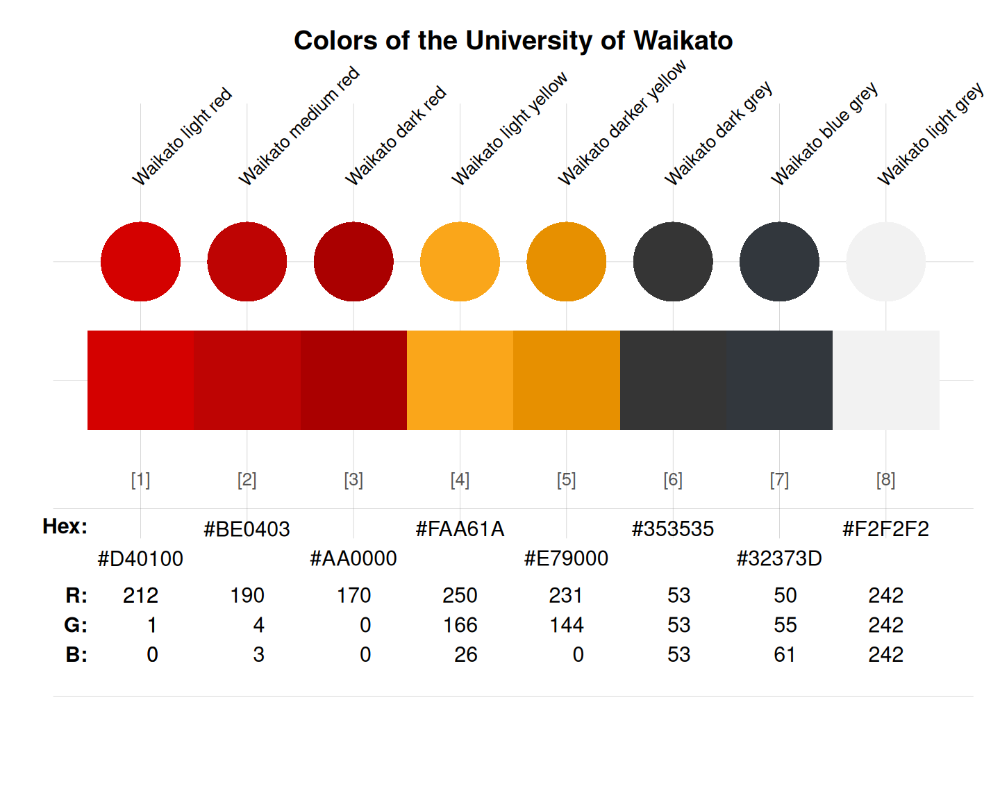

waikato provides the eight official web colours
of the University of Waikato, New Zealand.
Source
Color definitions are based on Waikato's brand standards.
Details
The 8 official web colours are
"Waikato light red" (defined as HEX #D40100),
"Waikato medium red" (defined as HEX #BE0403),
"Waikato dark red" (defined as HEX #AA0000),
"Waikato light yellow" (defined as HEX #FAA61A),
"Waikato darker yellow" (defined as HEX #E79000),
"Waikato dark grey" (defined as HEX #353535),
"Waikato blue grey" (defined as HEX #32373D), and
"Waikato light grey" (defined as HEX #F2F2F2).
waikato uses the HEX color definitions.
See also
seecol for viewing and comparing color palettes;
usecol for using color palettes;
simcol for finding similar colors;
newpal for defining new color palettes;
grepal for finding named colors.
Other New Zealand university color palettes:
auckland_1,
auckland_2,
otago
Examples
waikato
#> Waikato light red Waikato medium red Waikato dark red
#> "#D40100" "#BE0403" "#AA0000"
#> Waikato light yellow Waikato darker yellow Waikato dark grey
#> "#FAA61A" "#E79000" "#353535"
#> Waikato blue grey Waikato light grey
#> "#32373D" "#F2F2F2"
unikn::seecol(waikato, main = "Colors of the University of Waikato") # view colour palettes
